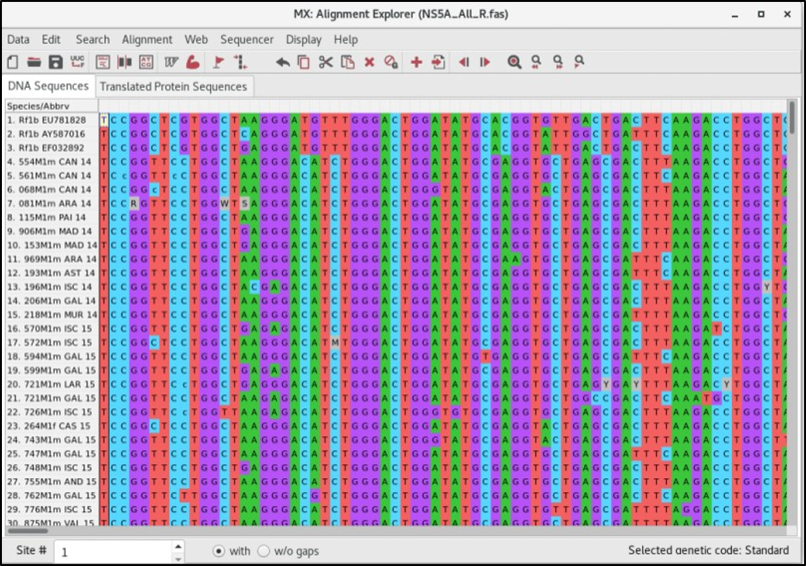
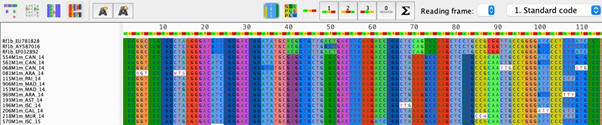
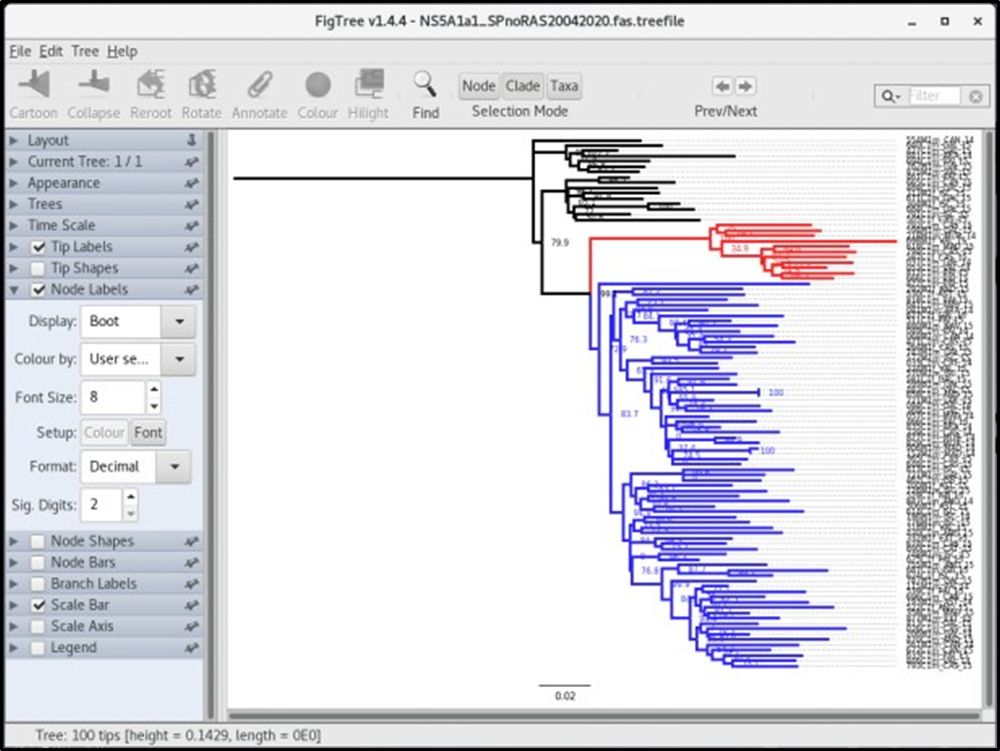
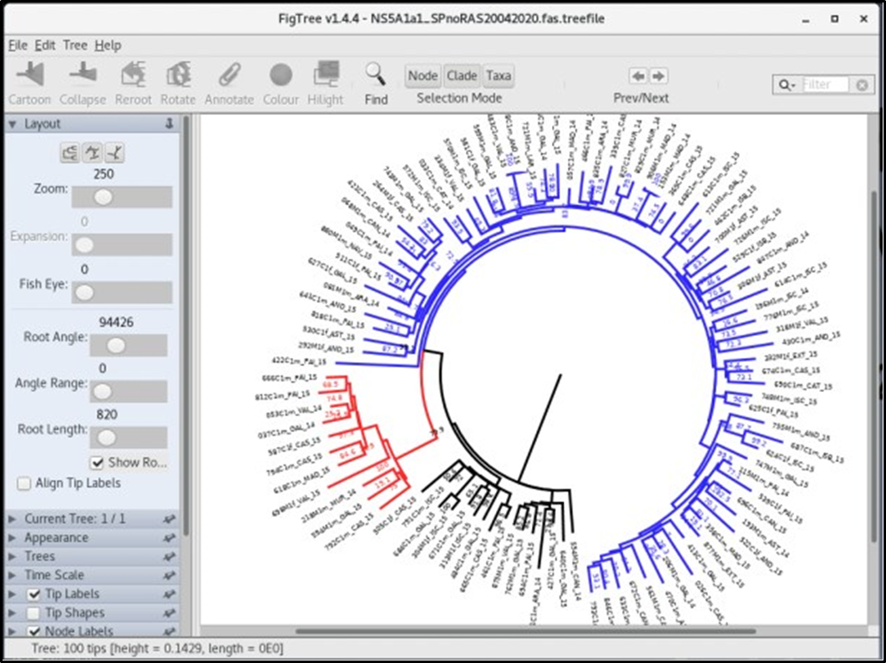
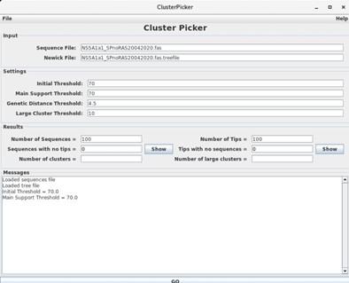
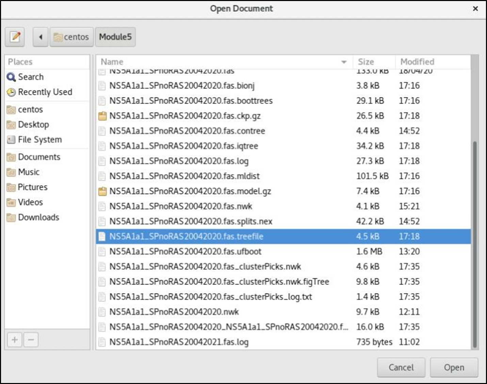
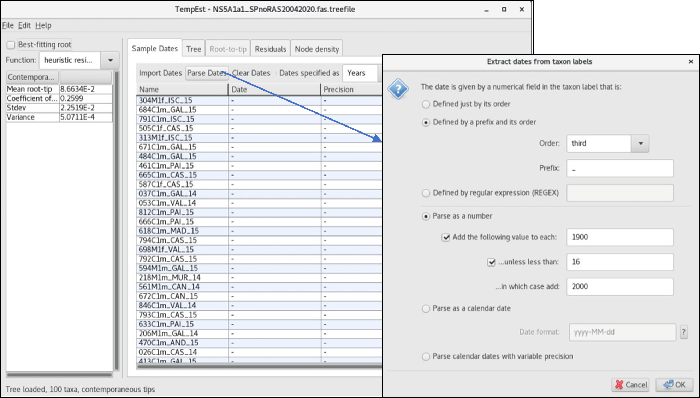
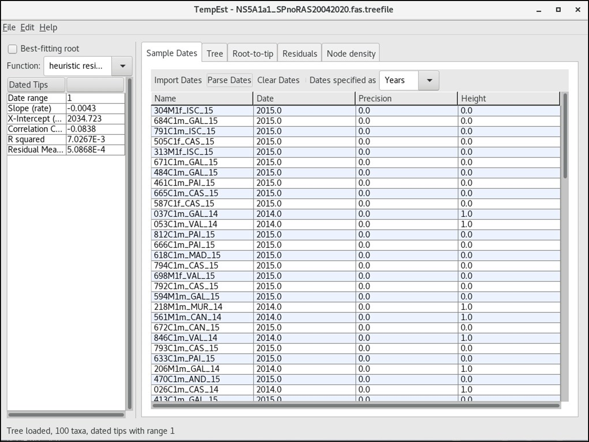
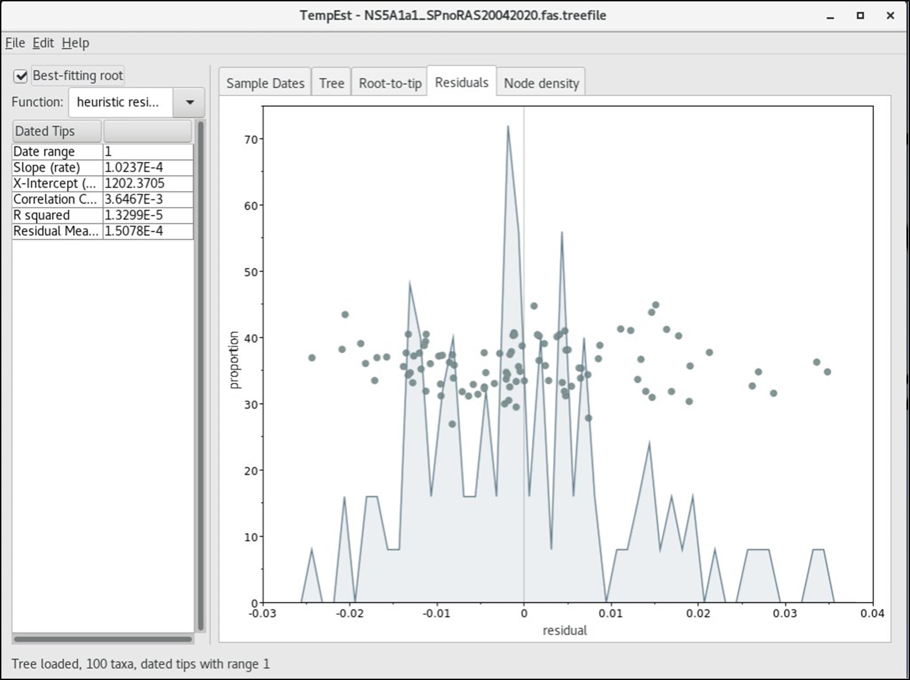

Click here to download the PDF version of this tutorial.
MEGA X (http://www.megasoftware.net ) is a software package for performing sequence alignment, estimating genetic distances, reconstructing phylogenetic trees and several other evolutionary analyses.
• A.1. Open MEGA X.
• A.2. Upload the fasta file NS5A_All_R200.fas. Align > Edit/Build Alignment > Retrieve sequences from a file > File directory (CentosHome > Module4 > HCV_dataset1 > Alignment files > NS5A_All_R30.fas).
Q1: Are the sequences aligned?
This dataset of HCV NS5A GT1a was taken from Palladino et al., 2020, Sci Rep. (https://doi.org/10.1038/s41598-020-69692-7).
Alignment contains: Reference strains e.g. Rf1b_EU781828, GT1a clade I e.g. 554M1m_CAN_14 and II e.g. 519C2f_PAI_15 from Spanish autonomous regions.
For this session and follow-up sessions we will be focusing on only Spanish HCV NS5A GT1a clade I.
(Save all new fasta files for today´s session in Module4 > HCV_dataset1 directory)
MEGA X produces multiple sequence alignments by either ClustalW or Muscle algorithms. Additionally, you can do a codon alignment if your nucleotide sequences code for a protein; this way the alignment produced will preserve the reading frame of those sequences.
• A.3. In our example we will choose Muscle align codons (with the default settings), since our DNA sequences code for the HCV NS5A protein. Alignment > Align by Muscle (codons) > Select all. Usually the default settings are adequate for your needs. No for Remove Gaps.
• A.4. Now you finally have your sequences aligned, you should also make a visual inspection of the alignment and make any necessary modifications manually.
Q2.1: Are there any misaligned columns?
Q2.2: Any gappy sequences? What can you say about these sequences (969M1m_ARA_15, 981, and 983C1m_AST_15)?
Toggle between the DNA Sequences and Translated Protein Sequences to look at the corresponding amino acid sequences (use the Standard code). To prepare your alignment for further analysis, make sure that all sequences start and end at the same position; if necessary, select the extra columns in the beginning and/or at the end of the DNA Sequences and delete them using the Delete Selected block icon (or EDIT > DELETE). In most situations any gaps in the middle of the alignment should also be deleted. Rule of thumb: if the majority of sequences(>50%) have agap in a given position (column), then thatposition should bedeleted; otherwise, you can keep that gap. Delete also any ambiguous aligned positions. If necessary, you can select a nucleotide (or a block of nucleotides) and move them sideways using the corresponding icons in the toolbar. VERY IMPORTANT: in order to preserve the biological significance of codon alignments, make sure you preserve the reading frame of your sequences. Hence, any gaps that you delete or create by moving sideways some nucleotides, must be made in multiples of threes.
Q3: Are there stop codons in the alignment? Introduce gaps at the start of the DNA sequence and observe if there is any changes in the open reading frame (Protein sequence).
• A.4. Editing the name of a sequence is easy. Double-click the name of a sequence and edit it or write a new one (but you should keep the Accession number!!). You can insert sequences from other fasta file by clicking Insert sequences from MEGA/Fasta/Text icon on the tool bar of MEGA.
• A.5. If you’re done with editing and satisfied with your alignment export it in MEGA format (to use in MEGA for further analysis) or in FASTA or NEXUS formats (to use in other phylogenetic programs). In our case, please export (Data > Export Alignment) in FASTA (NS5A_All_R30.fas) formats.
As part of quality control we will prepare another MSA file excluding the following drug resistance associated substitutions (RAS): How many RAS can you spot in the MSA?
o K24G/N/R (n/b: codon position 24 = base positions 70, 71 and 72)
o K26E
o M28A/G/T/V
o Q30C/D/E/G/H/I/K/L/N/R/S/T/Y
o L31F/M/P/V
o P32L/S
o S38F
o H58D/L/R
o A92K/T
o Y93C/F/H/L/N/R/S/T/W
• A.7. Identify RAS in the alignment and delete these RAS codons starting from the end of the alignment. Toggle between the Protein sequences and DNA sequences as above. Export alignment as NS5A_SPnoRAS040723.fas.
http://tree.bio.ed.ac.uk/software/figtree/
This is a user-friendly MSA tool, particularly useful for manipulating large sequence datasets.
Open Aliview > load sequences (drag and drop). Repeat the above procedure in Aliview (input file: NS5A_All_R200.fas) and compare this with MSA using MEGA X.
$ cd HCV_dataset1
We will first perform a Model test in IQ-Tree as follows:
$ iqtree -s NS5A_SPnoRAS040723.fas -m TESTONLY
-s is the option to specify the name of the alignment file that is always required by IQ-TREE to work.
-m TEST is the option to call up the model test without tree reconstruction.
Q4.1. What are the best models according to AIC and BIC?
Troubleshooting: If there is an error with executing the .fas file, open the file in a text editor to confirm that the sequence names are well written, probably missing underscores. Fix error by renaming the sequence names as follows (new file name old file name):
$ sed 's/ /_/g' NS5A_SPnoRAS040723.fas > NS5A_SPnoRAS040723T.fas
Next, we will combine both Model search with ML tree reconstruction and bootstrap branch support:
$ iqtree -s NS5A_SPnoRAS040723.fas -m MFP -b 1000
-m MFP is the option to specify the model name to use during the analysis and MFP(Modelfinder Plus) performs the model selection search similar to the JModel test that will be used for the tree reconstruction.
To minimize the demanding computation imposed by bootstrap we will proceed instead with alternative branch supports UFboot and aLRT:
$ iqtree -s NS5A_SPnoRAS040723.fas -m MFP -bb 1000 -alrt 1000 -redo
-bb 1000 specifies the number of replicates for UFBoot: IQ-TREE assesses branch support using an ultrafast bootstrap approximation (UFBoot) that is orders of magnitude faster than the standard bootstrap procedure.
-alrt 1000 specifies the number of iterations for the approximate likelihood rate test (aLRT)
At the end of the run IQ-TREE will write several output files including:
• example.phy.iqtree: You should look at this file to see the computational results. It also contains a textual representation of the final tree.
• example.phy.treefile: the ML tree in NEWICK format, which can be visualized by any supported tree viewer programs like FigTree or iTOL.
• example.phy.log: log file of the entire run (also printed on the screen).
• use -redo to overwrite files
• C.1. Import the file NS5A_SPnoRAS040723.fas.treefile into the figtree program: file > open > ‘tree file’. If a prompt appears (this usually happens with ML trees), specify the type of branch support for the tree e.g. Bootstrap or aLRT
• C.2. In the Layout menu, you can toggle between rectangular, polar and radial layout. Use the Fisheye for a quick zoom of nodes: make a single slide on the fisheye, move the cursor up and down the tree while holding-down the ctrl key. Further editing of treeswillbedemonstrated in thecomputersession: colourschemes and highlight, annotation of relevant branch supports (>70% boot) etc
 Q5.1. How does UFboot compare to the aLRT?
Q5.2. Can you identify any transmission pairs/clusters in the ML tree?
• C.3. Export your tree files in Newick and PDF formats after editing.
ClusterPicker is a useful tool for identifying transmission pairs and transmission clusters given a sequence alignment file and a tree file. Clusters are defined by branch supports (bootstrap and aLRT in percentages and Posterior probabilities in decimals). Watch out for incompatibilities of ClusterPicker with ML tree programs!
We will rebuild an ML tree as before but with a single branch support parameter – aLRT, otherwise ClusterPicker won´t be able to read the dual branch supports UFBoot/aLRT.
Run this to overwrite the previous treefile with only aLRT as branch support:
$ iqtree -s NS5A1a1_SPnoRAS120722.fas -m MFP -alrt 1000 -redo
*This is a larger dataset (clade 1, n=104) that we will use for the remainder of this course
Import the treefile and corresponding fas/fasta files into ClusterPicker as shown below:
Output files:
NS5A1a1_SPnoRAS120722.fas_clusterPicks.nwk - renamed tree file
NS5A1a1_SPnoRAS120722.fas_clusterPicks.nwk.FigTree - coloured figtree file
NS5A1a1_SPnoRAS120722.fas_clusterPicks_log.txt - log text file
Open the log text file for detailed descriptions of the transmission cluster.
Q6. Can we enforce more restrictive transmission cluster parameters? How many TCs do we have with a Bootstrap/aLRT = 90 and GD = 1.5% (0.015)?
Open the coloured figtree file and observe the new annotation and compare this with your response to Q5.2 above.
Prior to delving into spatio-temporal analysis under Bayesian astatistics as implemented in the BEAST package we will use TempEst to determine the temporal signal and ‘clocklikeness’ of molecular phylogenies of our dataset. It is designed for analysing trees that have not been inferred under a molecular-clock assumption (Sections A-D) to see how valid this assumption may be. Importantly, it can also root the tree at the position that is likely to be the most compatible with the assumption of the molecular clock.
• Once TemPest is opened it will immediately open a dialogue box to input your treefile. Select NS5A1a1_SPnoRAS120722.fas.treefile
• First, we specify the dates of the sequences in calendar years using the Parse Dates button on top of the panel. Recall the order of the naming sequence (Section A, also displayed in the TemPest console) and notice that ¨year¨ is the third item, and the separating prefix is an underscore ¨_¨
The dates in calendar years and Heights (year difference from the most recently sampled sequence 2015 in this case) for all the sequences will be displayed if properly parsed.
• Next, we explore the Tree, Root-to-tip, and Residuals panels.
Q7.1. What changes can be observed in the parameters listed in the left panel when you check the Best-fitting root? And when you switch between the different top panels, what changes do you observe?
Q7.2. Is there sufficient temporal signal in our dataset? Why is this so?
<<-HOME